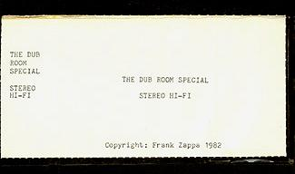
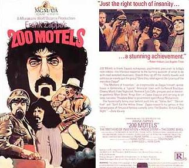

Заппа'zУх!Ой!
русский более или менее регулярный бюллетень для поклонников американского композитора
Frank'а Vincent'а Zappa'ы
Выпуск.30 (26 марта 2001)
Видимо-невидимо
Фрэнк всегда хотел снимать кино. В каталажку даже попадал из-за этого невинного желания. Десять дней в блоке C отсидел, но неуемное так и не пропало. Другое дело, что денег на настоящий Голливуд никогда не было. Даже свой первый из пары фильмов созданных в эпоху кинотеатров - Двести Мотелей, FZ снимал, как телевизионный. Впрочем, наверное, не только потому, что по официальной версии, гнать на магнитную пленку куда дешевле, чем на целлулоид. Скорей всего дадаистская кинетика искусства заставляет. Действительно, так только "на лету" спонтанность звуков и движений на самом деле и фиксируется.
В общем поздно, слишком поздно Sony с JVS изобрели домашнее видео. Выкинули бы на рынок первые волшебные сундучки не в 1975, а скажем, в 1965. К началу семидесятых уже вовсю могли гнать надежный массовый продукт. То-то Папа Фрэнк успел бы километров серой пленки намотать с такой игрушкой, глядишь, и синклавир выписывать не стал бы. Хотя, если честно, он и так успел не мало. 720 часов самодвижущихся картинок.
В 1982 еще даже ясности полной не было, кто же кого заборет Betamax VHS, или VHS - Betamax, а Frank Zappa уже склеивает свой первый видео-фильм. The Dub Room Special.

Дух эксперимента во всем от лабораторно-поликлинического оформления коробочки до способа распространения mail order only.
Чего не скажешь о видео-продукте врага-кровопийцы Warner Home Video, который в 1984 в VHS кассету закатал художественный фильм FZ 1971 года, Frank Zappa's 200 Motels. Уже штамповка. Все в ней поэтому чин-чинарем, клип, аннотация и даже рейтинг R, то есть поберегись, мелькают титьки в цвете. Но, тут, увы, ничего не сделать, все права проданы, забудьте.

В 1985 вновь под полным контролем маэстро (в дальнейшем только так уже и будет) выходит новый видео-фильм. Does Humor Belong In Music.
|
NO LASER WEAPONS NO FOG NO OVER-DUBS AND STILL SOME PEOPLE HAVE THE NERVE TO ASK... DOES HUMOR BELONG IN MUSIC? |
НИКАКОГО ЛАЗЕРА НИКАКИХ ДЫМОВ НИКАКОЙ ПЕРЕЗАПИСИ И ВСЕ РАВНО КОЕ-КОМУ НЕ НАДОЕДАЕТ СПРАШИВАТЬ... ЕСТЬ ЛИ ЮМОР С МУЗЫКОЙ? |
И между прочим, один из самых замечательных. И не только потому, что был сделан по горячим следам шестимесячного мирового турне 1984, а значит полон настоящего концертного электричества, энергии и бесшабашности, а прежде всего благодаря соотношению 1 к 10 в пользу музыки.
На самом деле, с точки зрения абстрактной механики анализаторов звуков - уха, и образов - глаза, все фильмы Фрэнка Заппы, будь-то эпопеи для большого экрана Frank Zappa's 200 Motels и Baby Snakes, или табачок-самосад времен квадрата, измеряемого в дюймах, вроде Uncle Meat, скроены в общем-то, за исключением, пожалуй, только The Amazing Mr. Bickford, по одной неизменной схеме.
На X частей, как правило, живой музыки, берется Y - всякой подручной белиберды. Куски интервью, обрывки мультиков, заготовки для семейной фильмотеки, полевой материал антрополога-любителя и зарисовки скрытой камерой будней грим-уборной. Все это равномерно перемешивается, снабжается титрами и готово - получай страна картину.
Так вот самый легкий и доступный из подобных кино-винегретов, конечно же, Does Humor Belong In Music. Фактически это грамотно сокращенный, видео-вариант концерта, сыгранного группой Фрэнка Заппы в Нью-Йорке в августе 1984. Двадцать лет, так сказать, на сцене. Twentieth Anniversary World Tour. Сплошной поток песен (три не очень, увы, длинных но прекрасных гитарных соло), лишь изредка прерываемый короткими вставочками, интервью FZ.
В общем, понятен и доступен всем. Для правильного восприятия не требует знаний английского языка, как Мотели или их Правдивая История (The True Story of 200 Motels), а то и буквально родственной близости с персонажами, как в случае бесконечного Дяди Мясо. Короче, отличная штучка, иди и смотри.
К этой же категорий, народно-демократических, то есть с бесспорной доминантой музыкальной составляющей относятся и Dub Room Special, и, безусловно, отменный во всех отношениях Baby Snakes.
Последний, был с полнокровного целлулоида 1979 года слит на кассету (на самом деле, две) в 1987. Рейтинг, между прочим, опять же подзаборный R, на сей раз много слово ругательных. По-крайней мере, так считает Патрик Нев, хранитель Интернетовской видеографии. Что до, меня, то я бы и упражнения с резиновой Miss Pinky Роя Эстрады детям показывать не стал бы. Да, и способ употребления собачки системы пудель, наглядно продемонстрированный Фрэнком, тоже.
Восемьдесят седьмой, вообще, урожайный. Помимо реформата старых добрых Змеек-Малышек, свет увидел полнометражный аннимационный фильм The Amazing Mr. Bickford. Редкий случай дани Фрэнка другому художнику, конкретно мастеру пластилиновой лепки Брюсу Бикфорду. Миры его сосично-колбасных персонажей самоуничтожаются и самовозраждаются под симфоническую музыку FZ.
Еще один релиз 87 - Video From Hell - больше похож не на оригинальную ленту, а на сборник клипов уже выпущенных и готовящихся к выпуску фильмов, к новинкам относятся синклавирные рулады, из тех, что можно послушать на одноименном Си-Дюке.
Завершает год Unlce Meat - фильм о чудачествах и кухонной-банной философии первого состава Матерей Изобретения. Чудесно смотрятся кадры лондонского концерта 68 (видеоряд той мини-оперы, которой открывается альбом Ahead Of Their Time), оставшийся час многообразных пермутаций Дона Престона и прочих Мамок поможет одолеть только всепобеждающая сила фанатской преданности и любви. Впрочем, немые кадры, Holiday In Berlin,
And then, we began to play.
A bunch of punks arose the crowd.
Student rebels, their flags upraised,
began to chant "Ho Chi Minh"
"Ho Ho Ho Chi Minh"
Threw tomatoes!
And the next thing we knew,
we were under siege.
безусловно, станут наградой всем сильным духом.
Ну, а точку в прижизненной видеографии ФЗ поставил во всех отношения приятный документальный фильм о том, как снимался музыкально-сюрреалистический шедевр - The True History Of 200 Motels. Самый мне запомнившийся кадр - это вечно голый годовалый Dweezil в рукомойнике вместе с грязной посудой. Хорошей музыки много, но самый чудесный фрагмент - Dummy Up - песенка из того видео, которое мы все ждем!
Ждем уже в этом году, следующем, следующем за следующим, одном из ближайшего десятилетия, столетия, тысячелетия после дождичка в четверг. В такие примерно интервалы ZFT обещает уложится. И обычно оно свое слово держит.
Пока же официальный видео каталог магазина Barfko-Swill пуст. Пуст уже лет пять не меньше, и тем не менее, чтобы тут грусть-печаль не разводить я отрыл в старых своих бумагах прайс 1994 года, не сомневаюсь еще при жизни мастера составленный. Вот ушко
можете щелкнуть, если не боитесь прилета 80 килобайт. Нет, даже обязательно, возьмите и щелкните, а то ведь и не поверите, что этих фильмов у FZ, ну, просто видимо-невидимо!
Искренне Ваш, Владимир Советов
http://www.arf.ru/
| Домой | Заппа'zУх!Ой! | Поиск | Хозяин |
{kind=link}